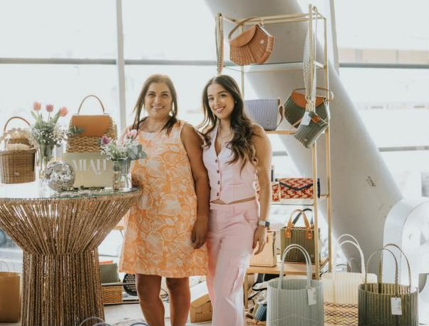

Olivia
Tule de agua y cuero genuino, con correa ajustable.
Artesanía salvadoreña · MIAH
Bolsos tejidos a mano, con la esencia de El Salvador.
En MIAH combinamos fibras de plástico reciclado y materiales naturales para crear accesorios que unen diseño, tradición y conciencia ambiental.

Descubre nuestras piezas
Conoce una selección de nuestros bolsos y los materiales que dan forma a cada diseño.
Tule de agua y cuero genuino, con correa ajustable.

Fibra reciclada y eco cuero, tejido a mano.

Mimbre, cuero y madera en un diseño tipo bucket.

Nuestra historia
MIAH nació en 2019 de un proyecto de madre e hija. Su deseo: crear accesorios que reflejen belleza y preserven las técnicas tradicionales de tejido.
Trabajamos con artesanos y tejedores locales para dar forma a piezas que celebran los materiales, el trabajo hecho a mano y la identidad salvadoreña.
Descubre nuestra historiaEncuentra tu próxima pieza
¿Te interesa un bolso o quieres conocer dónde encontrarnos? Consulta nuestros canales de contacto y tiendas.
Contáctanos